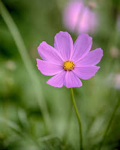

Flowers, also known as blooms and blossoms, are the reproductive structures of flowering plants.
Typically, they are structured in four circular levels around the end of a stalk. These include: sepals, which are modified leaves
that support the flower; petals, often designed to attract pollinators; male parts, where pollen is presented; and female parts,
where pollen is received and its movement is facilitated to the egg. When flowers are arranged in a group, they are known
collectively as an inflorescence.